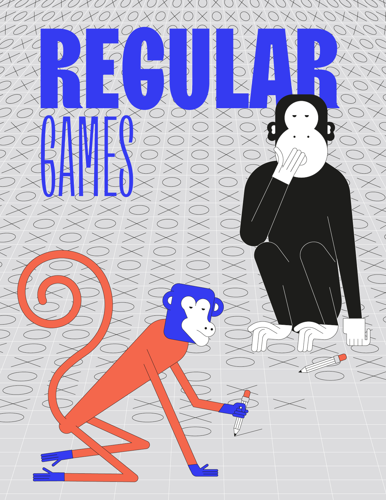

Regular Games

\[\newcommand{\F}{\mathcal{F}}
\newcommand{\LAR}{\mathrm{LAR}}
\newcommand{\Zielonka}{\mathrm{Zielonka}}
\newcommand{\depth}{\mathrm{depth}}
\newcommand{\support}{\mathrm{supp}}
\newcommand{\Eve}{\textrm{Eve}}
\newcommand{\Adam}{\textrm{Adam}}
\newcommand{\set}[1]{\left\{ #1 \right\}}
\newcommand{\N}{\mathbb{N}}
\newcommand{\Z}{\mathbb{Z}}
\newcommand{\Zinfty}{\Z \cup \set{\pm \infty}}
\newcommand{\R}{\mathbb{R}}
\newcommand{\Rinfty}{\R \cup \set{\pm \infty}}
\newcommand{\Q}{\mathbb{Q}}
\newcommand{\Qinfty}{\Q \cup \set{\pm \infty}}
\newcommand{\argmax}{\textrm{argmax}}
\newcommand{\argmin}{\textrm{argmin}}
\newcommand{\Op}{\mathbb{O}}
\newcommand{\Prob}{\mathbb{P}} \newcommand{\dist}{\mathcal{D}} \newcommand{\Dist}{\dist} \newcommand{\supp}{\textrm{supp}}
\newcommand{\game}{\mathcal{G}} \renewcommand{\Game}{\game} \newcommand{\arena}{\mathcal{A}} \newcommand{\Arena}{\arena}
\newcommand{\col}{\textsf{col}} \newcommand{\Col}{\col}
\newcommand{\mEve}{\mathrm{Eve}}
\newcommand{\mAdam}{\mathrm{Adam}}
\newcommand{\mRandom}{\mathrm{Random}}
\newcommand{\vertices}{V} \newcommand{\VE}{V_\mEve} \newcommand{\VA}{V_\mAdam} \newcommand{\VR}{V_\mRandom}
\newcommand{\ing}{\textrm{In}}
\newcommand{\Ing}{\ing}
\newcommand{\out}{\textrm{Out}}
\newcommand{\Out}{\out}
\newcommand{\dest}{\Delta}
\newcommand{\WE}{W_\mEve} \newcommand{\WA}{W_\mAdam}
\newcommand{\Paths}{\textrm{Paths}} \newcommand{\play}{\pi} \newcommand{\first}{\textrm{first}} \newcommand{\last}{\textrm{last}}
\newcommand{\mem}{\mathcal{M}} \newcommand{\Mem}{\mem}
\newcommand{\Pre}{\textrm{Pre}} \newcommand{\PreE}{\textrm{Pre}_\mEve} \newcommand{\PreA}{\textrm{Pre}_\mAdam} \newcommand{\Attr}{\textrm{Attr}} \newcommand{\AttrE}{\textrm{Attr}_\mEve} \newcommand{\AttrA}{\textrm{Attr}_\mAdam} \newcommand{\rank}{\textrm{rank}}
\newcommand{\Win}{\textrm{Win}}
\newcommand{\Lose}{\textrm{Lose}}
\newcommand{\Value}{\textrm{val}}
\newcommand{\ValueE}{\textrm{val}_\mEve}
\newcommand{\ValueA}{\textrm{val}_\mAdam}
\newcommand{\val}{\Value}
\newcommand{\Automaton}{\mathbf{A}}
\newcommand{\Safe}{\mathtt{Safe}}
\newcommand{\Reach}{\mathtt{Reach}}
\newcommand{\Buchi}{\mathtt{Buchi}}
\newcommand{\CoBuchi}{\mathtt{CoBuchi}}
\newcommand{\Parity}{\mathtt{Parity}}
\newcommand{\Muller}{\mathtt{Muller}}
\newcommand{\Rabin}{\mathtt{Rabin}}
\newcommand{\Streett}{\mathtt{Streett}}
\newcommand{\MeanPayoff}{\mathtt{MeanPayoff}}
\newcommand{\DiscountedPayoff}{\mathtt{DiscountedPayoff}}
\newcommand{\Energy}{\mathtt{Energy}}
\newcommand{\TotalPayoff}{\mathtt{TotalPayoff}}
\newcommand{\ShortestPath}{\mathtt{ShortestPath}}
\newcommand{\Sup}{\mathtt{Sup}}
\newcommand{\Inf}{\mathtt{Inf}}
\newcommand{\LimSup}{\mathtt{LimSup}}
\newcommand{\LimInf}{\mathtt{LimInf}}
\newcommand{\NL}{\textrm{NL}}
\newcommand{\PTIME}{\textrm{PTIME}}
\newcommand{\NP}{\textrm{NP}}
\newcommand{\UP}{\textrm{UP}}
\newcommand{\coNP}{\textrm{coNP}}
\newcommand{\coUP}{\textrm{coUP}}
\newcommand{\PSPACE}{\textrm{PSPACE}}
\newcommand{\EXPSPACE}{\textrm{EXPSPACE}}
\newcommand{\EXP}{\textrm{EXP}}
\newcommand{\kEXP}{\textrm{kEXP}}\]
Written by Nathanaël Fijalkow, Florian Horn
This chapter considers the so-called regular games, which from the easiest to the most complicated are: reachability, Büchi,
parity, Rabin, and then Muller games.
We develop in Section Reachability games the notion of attractors for solving reachability games.
This is the main building block for constructing algorithms throughout the book.
The next step is Büchi games in Section Büchi games.
We then construct a conceptually simple exponential time recursive algorithm for solving parity games in Section Parity games.
We extend the algorithm to Muller games in Section Rabin, Streett, and Muller games, and discuss the computational complexities of solving Rabin, Streett, and Muller games.
Finally, Section Zielonka tree is devoted to the combinatorial notion of the Zielonka tree,
which beautifully explains the memory requirements for Muller games and gives additional insights into the structures of Rabin and parity objectives.

{kind=link}